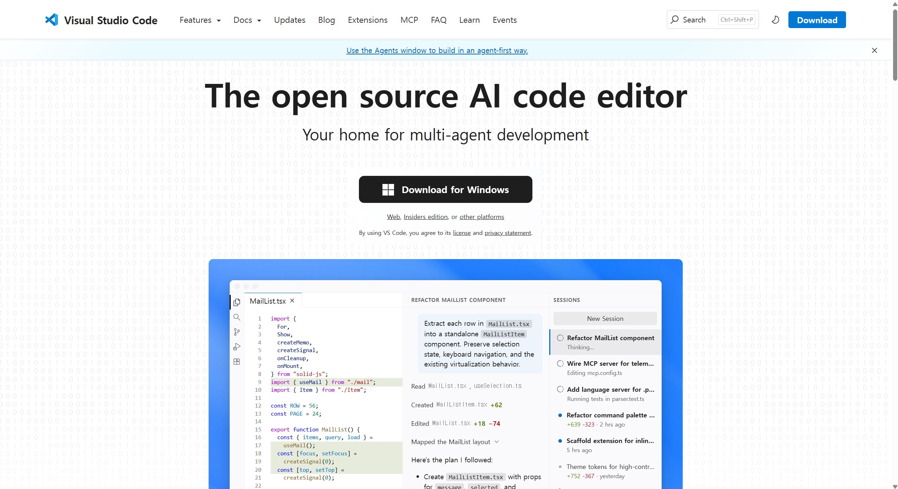
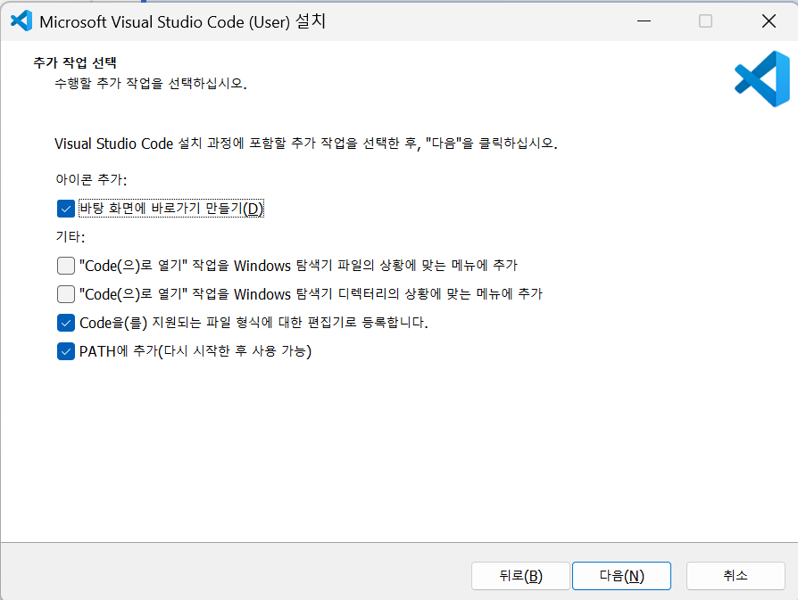
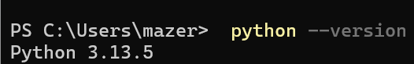
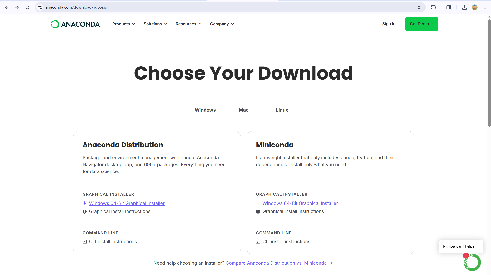
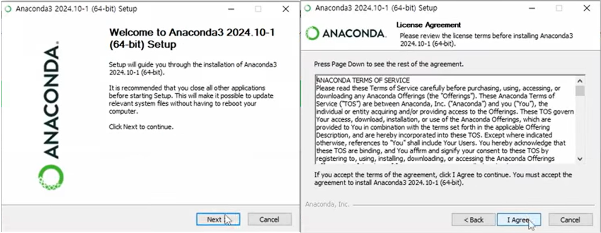
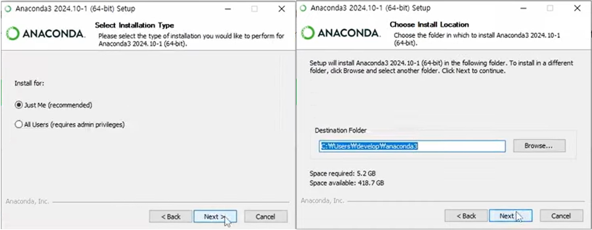
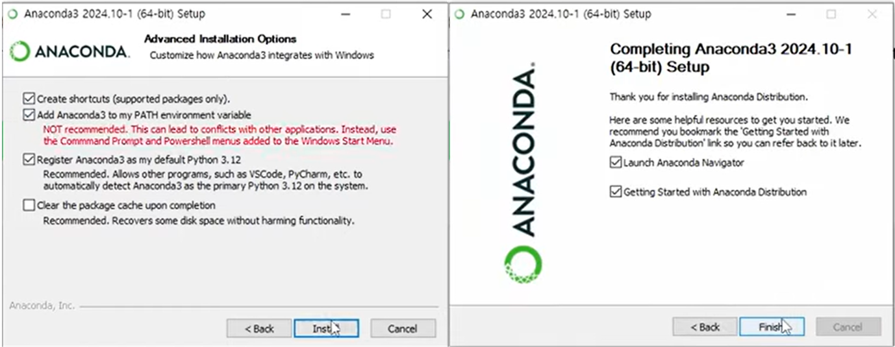
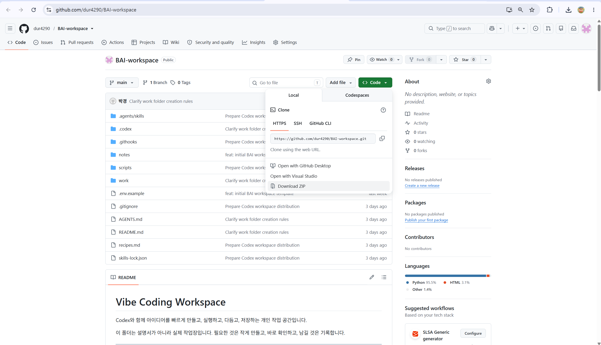
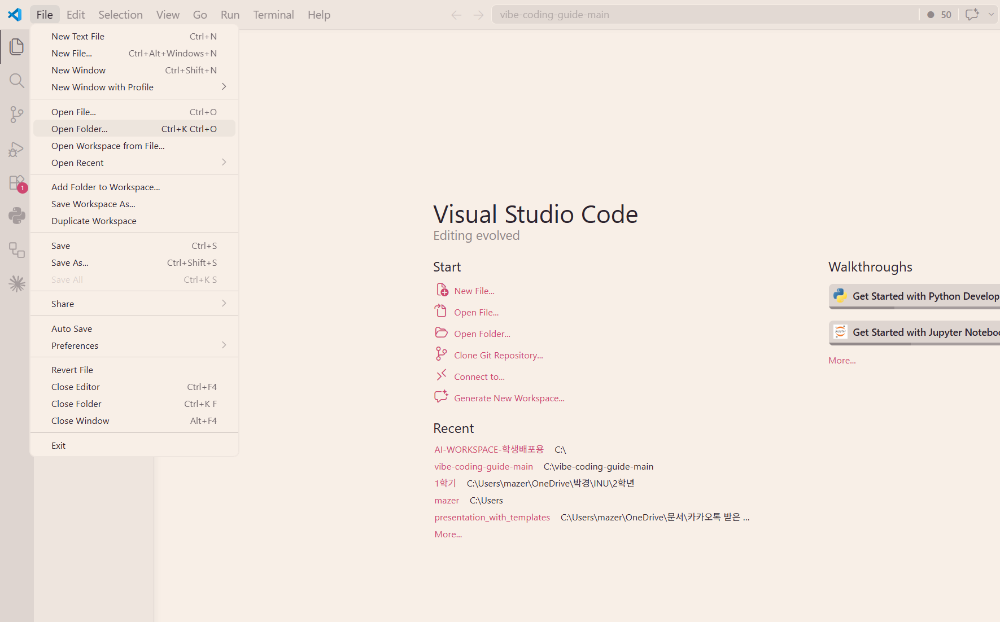

바이브코딩 준비 가이드
VSCode 설치 → (Python 없으면 Anaconda) → GitHub에서 학생 워크스페이스 받기
실습 환경을 만드는 단계만 모았습니다. Ch1을 끝내고 본인이 Ch2로 가야 하는지 Ch3로 바로 가도 되는지 안내해줍니다.
Ch1VSCode 설치5~10분
VSCode는 코드를 작성하는 편집기입니다. 마이크로소프트에서 만든 무료 프로그램입니다.
1. VSCode 공식 사이트 접속
앞으로 모든 실습은 VSCode 안에서 진행하므로 먼저 편집기를 받아야 합니다.

VSCode 공식 사이트 메인 화면. 사이트가 자동으로 Windows용 버튼을 보여줍니다.VSCodeUserSetup-x64-xxx.exe 같은 설치 파일이 저장되면 성공입니다.2. 설치 파일 실행
다운로드한 설치 파일을 실행해서 VSCode를 컴퓨터에 설치합니다. 대부분 "다음"만 누르면 되지만, 중간 한 화면에서 옵션 체크 상태를 꼭 확인해야 합니다.
VSCodeUserSetup-xxx.exe 파일을 더블클릭해서 설치 마법사를 시작하세요.
설치 마법사 화면 순서
- 사용권 계약 — "동의함" 선택 후 다음.
- 설치 위치 선택 — 기본값 그대로 두고 다음.
- 시작 메뉴 폴더 선택 — 기본값 그대로 두고 다음.
- 추가 작업 선택 — 이 화면이 중요합니다. 아래 표대로 체크하세요.
- 설치 준비 완료 — "설치" 버튼 클릭.
- 설치 완료 — "Visual Studio Code 실행" 체크 후 마침.

"추가 작업 선택" 화면. 아래 표대로 체크박스 상태를 맞춰주세요."추가 작업 선택" 화면 — 체크박스 5개 안내
- ☑ 바탕 화면에 바로가기 만들기 — 체크 추천. 바탕화면에서 바로 VSCode를 열 수 있어 편합니다.
- ☑ "Code(으)로 열기" 작업을 Windows 탐색기 파일의 상황에 맞는 메뉴에 추가 — 체크 추천. 파일을 우클릭해 바로 VSCode로 열 수 있습니다.
- ☑ "Code(으)로 열기" 작업을 Windows 탐색기 디렉터리의 상황에 맞는 메뉴에 추가 — ⭐ 강력 추천. 폴더를 우클릭해 그 폴더를 통째로 VSCode로 열 수 있습니다. Ch3에서 워크스페이스를 열 때 가장 편한 방법입니다.
- ☑ Code을(를) 지원되는 파일 형식에 대한 편집기로 등록합니다 — 기본 체크. 그대로 두세요.
- ☑ PATH에 추가(다시 시작한 후 사용 가능) — ⭐ 필수. 기본 체크되어 있지만, 풀려 있다면 꼭 체크하세요. 터미널에서
code명령어를 쓸 수 있게 해줍니다.
python --version 확인이 잘 안 되면 VSCode를 완전히 닫았다가 다시 열어보세요.
3. Python이 이미 설치되어 있는지 확인
Python은 자동화 스크립트에 쓰는 프로그래밍 언어입니다. 데이터과학과 비즈니스프로그래밍1을 들었다면 이미 Anaconda 또는 Python이 설치되어 있을 가능성이 높습니다. 있으면 Ch2를 건너뛰어도 됩니다.
Ctrl + `)을 열고 아래 명령을 입력하세요.
python --version
터미널에python --version을 입력했을 때 버전이 나오는 모습.
Python 글자만 나오고 버전 번호가 안 보이면, Windows의 "앱 실행 별칭"이 잡힌 상태일 수 있습니다. 이 경우는 아직 실제 Python이 설치된 게 아니므로 Ch2 Anaconda 설치로 가세요.
- 버전 번호가 정상 출력됨 (예:
Python 3.11.5) → Ch3. 워크스페이스 받기로 바로 가세요. - 버전이 안 나오거나 오류 메시지 → Ch2. Anaconda 설치로 가세요.
Ch2Anaconda 설치10~15분
python --version으로 버전이 정상 출력됐다면 이 챕터는 건너뛰고 Ch3로 바로 가세요. Anaconda는 Python을 포함한 데이터과학용 통합 환경입니다.
1. Anaconda 다운로드 페이지
Anaconda 공식 사이트에서 Windows용 그래픽 설치 파일을 받습니다.
- 가입 화면이 뜨면 Skip Registration(아래쪽에 작게 있음)을 누르세요. 회원가입 안 해도 됩니다.
- 다음 화면에서 Anaconda Distribution의 Windows 64-Bit Graphical Installer를 선택하세요. (Miniconda 아닙니다.)

Anaconda 다운로드 페이지. 64-Bit Graphical Installer를 선택하세요.Anaconda3-xxx-Windows-x86_64.exe 파일이 저장되면 성공입니다.2. 설치 진행 — 옵션 두 개 꼭 체크
설치 마법사를 따라 진행하되, 옵션 화면에서 두 개를 체크해야 VSCode와 PowerShell에서 Python을 잘 찾습니다.
Anaconda3-xxx.exe를 실행하고 Next로 진행하세요. 중간에 옵션 화면이 나오면 아래 둘 다 체크합니다.
- Add Anaconda3 to my PATH environment variable
- Register Anaconda3 as my default Python

1-2단계 — 라이선스 동의 / 사용자 선택
3-4단계 — 설치 경로 / 옵션 선택 (두 개 체크!)
5-6단계 — 설치 진행 / 완료3. VSCode 재시작 후 Python 다시 확인
설치 후에는 VSCode가 새 PATH 설정을 읽도록 한 번 다시 시작해야 합니다.
- VSCode를 완전히 종료한 뒤 다시 엽니다.
- Terminal → New Terminal을 열고 다시 입력합니다.
python --versionPython 3.x.x처럼 버전이 나오면 성공입니다.
Python: Select Interpreter를 검색해 실행한 뒤, Anaconda Python을 선택하세요. 일반적인 경로는 C:\ProgramData\anaconda3\python.exe입니다.
Python 3.x.x처럼 버전 번호가 정상 출력되면 Ch2 완료입니다.Ch3GitHub에서 학생 워크스페이스 받기10~15분
학생 배포용 저장소를 ZIP으로 내려받고 VSCode에서 폴더로 여는 단계입니다.
1. 학생 배포용 저장소 열기
GitHub의 저장소 페이지에서 워크스페이스 전체를 한 번에 받을 수 있습니다. 가입은 안 해도 됩니다.

학생 배포용 워크스페이스 저장소(BAI-workspace) 화면. 다음 단계에서 우상단의 초록색 Code 버튼을 누릅니다.2. Download ZIP으로 내려받기
처음에는 복잡한 git clone 대신 ZIP으로 받는 편이 가장 쉽습니다.
C:\Users\본인계정\Downloads)를 확인하세요.
BAI-workspace-main.zip 같은 파일이 저장되면 성공입니다.3. 압축 해제
ZIP 안의 파일을 그대로는 쓸 수 없습니다. 압축을 풀어야 VSCode가 그 폴더를 열 수 있습니다.
- 다운로드한
BAI-workspace-main.zip파일을 마우스 오른쪽 클릭 → 압축 풀기(Extract All)를 선택하세요. - 찾기 쉬운 위치(바탕화면이나 문서 폴더)에 풉니다.
- 압축이 풀리면 폴더 이름이
BAI-workspace-main처럼 길게 보일 수 있습니다. 원하면BAI-workspace처럼 짧게 바꿔도 됩니다.
README.md, 00-inbox, 10-projects, 20-areas, 30-resources, 40-archive, scripts 같은 파일과 폴더가 보이면 맞게 받은 것입니다.4. VSCode에서 워크스페이스 폴더 열기
VSCode는 "폴더"를 열어 그 안의 모든 파일을 한 작업 공간으로 다룹니다. 워크스페이스 폴더를 열어두면 좌측 탐색기에서 모든 파일에 바로 접근할 수 있습니다.
- VSCode를 엽니다.
- 상단 메뉴 File → Open Folder… (또는
Ctrl + K, Ctrl + O)를 선택합니다. - 방금 압축을 푼 워크스페이스 폴더를 골라 폴더 선택을 누릅니다.

Open Folder로 워크스페이스 폴더 열기"> File → Open Folder로 워크스페이스 폴더 열기.README.md, 00-inbox, 10-projects, 20-areas, 30-resources, 40-archive, scripts 같은 파일과 폴더가 보이면 모든 챕터 완료입니다.